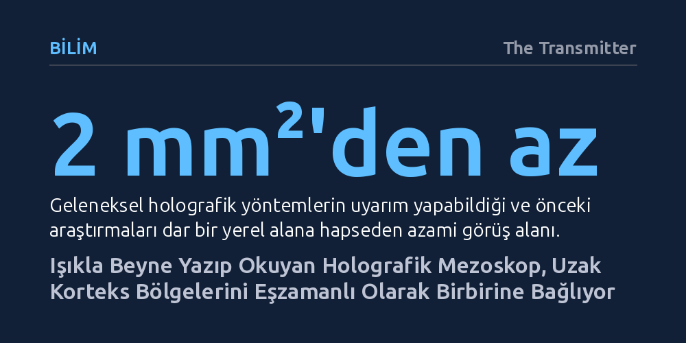

BILIM · The Transmitter · 2026-10-07
Yeni geliştirilen iki fotonlu holografik mezoskop, fare beyninde geniş korteks alanlarındaki nöronal aktiviteyi tek hücre hassasiyetiyle aynı anda hem kaydedip hem uyarabiliyor. Sadece ışık kullanan bu platform, beyin bölgeleri arasındaki bilgi aktarımını hücresel düzeyde incelemenin yolunu açıyor.
Beyin bölgeleri arasındaki iletişimi anlamak için artık süreçleri yalnızca pasif biçimde izlemekle yetinmeyip, geniş bir korteks ağındaki tek tek nöronları ışıkla yönlendirip diğer alanlardaki anlık tepkiyi eşzamanlı ölçebiliyoruz.

Sinirbilimciler uzun süredir beynin farklı bölgelerinin birbiriyle nasıl konuştuğunu, gelen duyusal bilginin algıya ve davranışa nasıl dönüştüğünü çözmeye çalışıyor. Ancak bugüne kadar kullanılan optik araçlar araştırmacıları keskin bir tercihe zorluyordu: Ya çok dar bir alanda tek tek nöronların ayrıntısına inilebiliyor ya da geniş beyin alanları hücresel çözünürlük kaybedilerek genel hatlarıyla izlenebiliyordu.
Nature Neuroscience dergisinde tanıtılan yeni iki fotonlu holografik mezoskop bu kısıtlamayı ortadan kaldırıyor. Geliştirilen bu yeni platform, fare korteksinin geniş alanlarında neredeyse tek hücre çözünürlüğünde nöronal aktiviteyi aynı anda hem yönlendirmeyi ("yazmayı") hem de kaydetmeyi ("okumayı") mümkün kılıyor. Yalnızca ışıktan yararlanan bu çift yönlü mimari sayesinde, bir bölgedeki belirli hücreler hassas biçimde uyarılırken bu sinyalin ulaştığı diğer beyin alanlarındaki tepkiler anbean takip edilebiliyor.
Platformun çalışma mantığı, optogenetik yöntemi ile bilgisayar destekli holografinin bir araya getirilmesine dayanıyor. Araştırmacılar, mekânsal ışık modülatörleri (SLM) kullanarak doku üzerinde üç boyutlu ve yüksek hedef hassasiyetine sahip aydınlatma desenleri oluşturuyor. Bu holografik ışık kontrolü, hedeflenen tekil nöronları doğrudan aktive ederek sisteme "yazma" yeteneği kazandırıyor.
Sistemin "okuma" ayağında ise nöronlar her elektriksel sinyal ürettiğinde parıldayan, genetik olarak kodlanmış floresan gösterge proteinleri devreye giriyor. Böylece araştırmacılar bir bölgedeki hücreleri ışık darbeleriyle tetiklediğinde, bu uyarının sinir ağları boyunca nasıl yayıldığını ve alt devrelerde hangi hücreleri harekete geçirdiğini yüksek çözünürlüklü mikroskopiyle anında gözlemleyebiliyor.
Holografik uyarım tekniklerinin bugüne kadarki en zayıf karnı, lazerin yönlendirilebildiği görüş alanının 2 milimetrekareden daha küçük bir bölgeyle sınırlı kalmasıydı. Piksel boyutu ve çözünürlük sınırlarından kaynaklanan bu dar pencere, araştırmacıları zorunlu olarak yalnızca yerel nöron devrelerini incelemeye ya da birbirine bitişik iki komşu alan arasındaki kısa menzilli etkileşimlerle yetinmeye mahkûm ediyordu.
Araştırma ekibi bu engeli aşmak için optimize ettikleri holografik uyarım düzeneğini, standart bir iki fotonlu mezoskop platformuyla bütünleştirdi. 5 milimetrekareye kadar genişleyen bir alanda nöron hareketliliğini kaydedebilen bu yeni melez yapı, uzak kortikal alanlar arasındaki sinyal akışını ve bilişsel süreçlerin bütüncül ağ dinamiklerini canlı organizmada doğrudan sınamak için yepyeni bir zemin sunuyor.